UT2 · Modificación, suspensión y extinción del contrato de trabajo
Gestiona los cambios y la finalización de la relación laboral aplicando la normativa, realizando los cálculos y generando la documentación correspondiente.
Criterios de evaluación del RA2
1. Cambios en las condiciones de trabajo
La relación laboral puede cambiar sin que nazca un contrato nuevo. El técnico debe identificar qué condición cambia, cuál es su fuente —ley, convenio, contrato o decisión empresarial— y qué procedimiento corresponde. No es equivalente modificar un horario dentro de los márgenes ordinarios que alterar una condición esencial. Antes de tramitar cualquier cambio se documentan causa, fecha de efectos, personas afectadas y norma aplicable.
Aprende a clasificar el cambio antes de tramitarlo
No todo cambio en el trabajo tiene la misma naturaleza jurídica. Puede ser una decisión organizativa ordinaria, movilidad funcional, movilidad geográfica o una modificación sustancial. Antes de redactar una comunicación, RR. HH. reconstruye qué condición existía, de dónde procedía y qué pretende cambiarse. Se anotan condición anterior y nueva, fecha, duración, causa, personas afectadas y documentos que acreditan la situación inicial.
Ejemplo explicado. Una auxiliar trabaja de 8:00 a 15:00 y se propone un sistema estable de mañana y tarde. No basta escribir «nuevo horario»: se revisan contrato y convenio, se valora el alcance del cambio, se determina el procedimiento y solo después se prepara la comunicación.
Método profesional
- Identificar el hecho y las personas afectadas.
- Localizar norma y convenio vigentes.
- Determinar procedimiento, plazos y efectos económicos.
- Preparar y comunicar la documentación.
- Registrar evidencias y archivar con trazabilidad.
| CASO PROFESIONAL Una empresa reorganiza el horario de su departamento administrativo. Antes de comunicarlo, RR. HH. comprueba convenio, contrato y alcance real del cambio. |
|---|
Comprueba
Explica qué documento, plazo, cálculo o evidencia revisarías antes de cerrar este expediente.
2. Movilidad funcional y geográfica
La movilidad funcional afecta a las funciones desarrolladas y debe respetar las reglas de clasificación profesional, titulación cuando sea exigible, dignidad y retribución. La movilidad geográfica exige distinguir traslado y desplazamiento y comprobar causas, duración, comunicación y derechos asociados. La decisión administrativa debe apoyarse en hechos verificables y conservar su trazabilidad.
Movilidad funcional paso a paso
Para cambiar funciones se comparan las tareas nuevas con la clasificación profesional del convenio. Se comprueban formación o habilitación exigible, duración, motivo y retribución. Deben describirse funciones reales, no solo el nombre del puesto. Si se asignan funciones de otro grupo, el alumno debe revisar los límites y consecuencias previstos en la norma y el convenio.
Movilidad geográfica
Cuando cambia el lugar de prestación se distingue entre desplazamiento temporal y traslado y se documentan origen, destino, distancia, duración, causa, fecha y compensaciones. Cambiar de mesa dentro del mismo centro no es equivalente a prestar servicios durante meses en otra isla.
Método profesional
- Identificar el hecho y las personas afectadas.
- Localizar norma y convenio vigentes.
- Determinar procedimiento, plazos y efectos económicos.
- Preparar y comunicar la documentación.
- Registrar evidencias y archivar con trazabilidad.
| CASO PROFESIONAL Un trabajador pasa temporalmente a tareas de un grupo distinto. El expediente debe justificar la necesidad, duración, funciones y efectos retributivos. |
|---|
Comprueba
Explica qué documento, plazo, cálculo o evidencia revisarías antes de cerrar este expediente.
3. Modificación sustancial
Cuando el cambio alcanza materias especialmente relevantes de la prestación laboral, debe analizarse el régimen de modificación sustancial. La gestión exige identificar si es individual o colectiva, acreditar la causa cuando proceda, respetar el procedimiento y comunicar la decisión de forma que puedan conocerse contenido, fecha y efectos. El técnico no decide por intuición: contrasta el supuesto con la norma y el convenio.
Qué significa que una modificación sea sustancial
No depende simplemente de que el cambio resulte incómodo. Se analiza si afecta con entidad a condiciones relevantes como jornada, horario, turnos, remuneración, sistema de trabajo o determinadas funciones. Importan el contenido concreto, la intensidad del cambio y el origen de la condición.
Después se determina si el procedimiento es individual o colectivo. En los casos colectivos aparecen exigencias de consulta y representación. Una técnica útil es dibujar la secuencia decisión → comunicación o consulta → fecha de efectos → actuaciones posteriores.
Ejemplo. Implantar permanentemente turnos donde existía horario fijo exige recopilar contratos, calendario, convenio, personas afectadas y justificación antes de decidir el circuito documental.
Método profesional
- Identificar el hecho y las personas afectadas.
- Localizar norma y convenio vigentes.
- Determinar procedimiento, plazos y efectos económicos.
- Preparar y comunicar la documentación.
- Registrar evidencias y archivar con trazabilidad.
| CASO PROFESIONAL Cambiar de forma estable el sistema de turnos requiere un análisis diferente a un ajuste puntual de organización. |
|---|
Comprueba
Explica qué documento, plazo, cálculo o evidencia revisarías antes de cerrar este expediente.
4. Suspensión del contrato
La suspensión interrumpe temporalmente obligaciones principales del contrato sin extinguir necesariamente el vínculo. Sus causas y efectos son diversos: incapacidad temporal, nacimiento y cuidado, riesgo durante embarazo o lactancia, ejercicio de cargo público, sanción, causas económicas o de fuerza mayor, entre otras. Para cada supuesto se registra causa, periodo, comunicaciones, efectos sobre salario/cotización y fecha prevista de reincorporación.
Suspender no significa terminar el contrato
El vínculo continúa aunque temporalmente se interrumpan determinadas obligaciones. Por eso una suspensión no se gestiona como una baja definitiva ni genera por sí sola una liquidación final. La causa concreta determina documentación, duración, prestación, cotización y reincorporación.
Para estudiarlo, construye una tabla con cinco columnas: causa, documento de inicio, periodo, efecto salarial/cotización y documento de cierre. Incapacidad temporal, nacimiento y cuidado o suspensiones empresariales comparten la idea de suspensión, pero no el mismo circuito.
Ejemplo. En una incapacidad temporal RR. HH. registra fechas e incidencia, adapta nómina y cotización conforme al periodo y controla la reincorporación. Al volver no se firma un contrato nuevo.
Método profesional
- Identificar el hecho y las personas afectadas.
- Localizar norma y convenio vigentes.
- Determinar procedimiento, plazos y efectos económicos.
- Preparar y comunicar la documentación.
- Registrar evidencias y archivar con trazabilidad.
| CASO PROFESIONAL Ante una incapacidad temporal, la empresa no tramita una baja contractual: registra la situación y aplica sus efectos específicos. |
|---|
Comprueba
Explica qué documento, plazo, cálculo o evidencia revisarías antes de cerrar este expediente.
5. Excedencias
Las excedencias requieren distinguir modalidad, requisitos, duración y derechos de reserva o preferencia de reingreso. La documentación debe evitar promesas que la norma no establece y recoger con precisión solicitud, resolución empresarial y fechas. Al aproximarse el final se revisan las condiciones de reincorporación y las comunicaciones necesarias.
Modalidades y derechos distintos
La palabra excedencia agrupa situaciones con requisitos y efectos diferentes. Una excedencia voluntaria no debe documentarse como una excedencia vinculada al cuidado. Se comprueban modalidad, requisitos, duración, norma, convenio y régimen de reincorporación. La resolución empresarial no debe prometer una reserva de puesto cuando la modalidad concreta no la establece en esos términos.
Tramitación
- Registrar solicitud y fecha.
- Identificar modalidad y requisitos.
- Revisar posibles mejoras del convenio.
- Responder con fechas y efectos precisos.
- Crear una alerta para gestionar el final del periodo.
Ejemplo. Dos personas piden ausentarse un año, una por interés personal y otra por cuidado familiar. Aunque la duración coincida, no puede copiarse la misma resolución.
Método profesional
- Identificar el hecho y las personas afectadas.
- Localizar norma y convenio vigentes.
- Determinar procedimiento, plazos y efectos económicos.
- Preparar y comunicar la documentación.
- Registrar evidencias y archivar con trazabilidad.
| CASO PROFESIONAL Una solicitud de excedencia por cuidado familiar no se gestiona igual que una excedencia voluntaria. |
|---|
Comprueba
Explica qué documento, plazo, cálculo o evidencia revisarías antes de cerrar este expediente.
6. Extinción por voluntad de las partes
La extinción puede derivar de mutuo acuerdo, causas válidamente consignadas, dimisión, abandono, jubilación u otras circunstancias previstas legalmente. La calificación correcta determina preaviso, documentación y efectos económicos. Debe diferenciarse con cuidado una dimisión expresa de situaciones ambiguas y conservarse evidencia de las comunicaciones.
Quién manifiesta la voluntad y cómo se acredita
Una dimisión expresa no se documenta igual que un mutuo acuerdo. Tampoco debe interpretarse automáticamente una ausencia como voluntad inequívoca de extinguir. Cuando los hechos sean ambiguos, se documentan y se revisan antes de convertirlos en una baja definitiva.
Recibida una dimisión, se registra la fecha, se comprueba el preaviso aplicable y se fija el último día. Después se coordinan baja y liquidación. Los posibles efectos de una falta de preaviso se verifican en la fuente aplicable.
Ejemplo. Una administrativa entrega el día 4 una carta indicando que terminará el 18. RR. HH. conserva la comunicación, revisa convenio, fija la fecha efectiva y calcula los conceptos pendientes.
Método profesional
- Identificar el hecho y las personas afectadas.
- Localizar norma y convenio vigentes.
- Determinar procedimiento, plazos y efectos económicos.
- Preparar y comunicar la documentación.
- Registrar evidencias y archivar con trazabilidad.
| CASO PROFESIONAL Una persona comunica su dimisión. RR. HH. registra fecha de recepción, preaviso aplicable, fecha de baja y liquidación pendiente. |
|---|
Comprueba
Explica qué documento, plazo, cálculo o evidencia revisarías antes de cerrar este expediente.
7. Despidos
En los despidos es esencial identificar el tipo de decisión, los hechos y el procedimiento. La carta debe permitir conocer la causa y la fecha de efectos; según el supuesto pueden existir requisitos adicionales, indemnización y posibilidades de impugnación. El técnico prepara documentación y cálculos sin sustituir el asesoramiento jurídico cuando el caso lo requiere.
Preparar un despido exige preparar primero los hechos
La carta debe permitir conocer qué se decide, qué hechos sustentan la decisión y desde cuándo produce efectos. Antes de redactarla se recopilan fechas, antecedentes y documentos. Las exigencias cambian según el tipo de despido y pueden existir garantías adicionales, por lo que una plantilla nunca sustituye la comprobación jurídica.
El alumno debe distinguir, al menos, que un despido basado en incumplimientos atribuidos a la persona trabajadora sigue un razonamiento diferente de una extinción por causas objetivas. Cambian los hechos a acreditar, el procedimiento y los posibles efectos económicos.
Ejemplo. Decir que alguien «rinde poco» es demasiado genérico. Se necesitan periodo, hechos observables, referencias utilizadas y documentación.
Método profesional
- Identificar el hecho y las personas afectadas.
- Localizar norma y convenio vigentes.
- Determinar procedimiento, plazos y efectos económicos.
- Preparar y comunicar la documentación.
- Registrar evidencias y archivar con trazabilidad.
| CASO PROFESIONAL Una carta genérica sin hechos concretos puede generar problemas probatorios y procedimentales. |
|---|
Comprueba
Explica qué documento, plazo, cálculo o evidencia revisarías antes de cerrar este expediente.
8. Liquidación y finiquito
Al finalizar la relación se revisan todas las cantidades pendientes: salario del periodo, pagas extraordinarias devengadas cuando no estén prorrateadas, vacaciones generadas y no disfrutadas y otros conceptos aplicables. El finiquito liquida cantidades; no debe confundirse automáticamente con una indemnización. Cada cálculo debe mostrar periodo, base, operación y fuente utilizada.
Construir el finiquito por componentes
Primero se calcula el salario pendiente hasta la baja. Después se revisan pagas extraordinarias: si están prorrateadas ya se han abonado progresivamente; si no, se determina la parte devengada. A continuación se comparan vacaciones generadas y disfrutadas y se incorporan otros conceptos pendientes. La indemnización, cuando corresponda, se calcula separadamente.
Ejemplo de método. Una persona finaliza el día 20. Se toma el salario del periodo, el sistema de pagas, el calendario de vacaciones y el convenio. Cada línea de cálculo muestra dato de origen, operación y resultado para que otra persona pueda reproducirlo.
Método profesional
- Identificar el hecho y las personas afectadas.
- Localizar norma y convenio vigentes.
- Determinar procedimiento, plazos y efectos económicos.
- Preparar y comunicar la documentación.
- Registrar evidencias y archivar con trazabilidad.
| CASO PROFESIONAL Antes de emitir el documento se contrastan nómina, calendario de vacaciones, convenio y fecha efectiva de extinción. |
|---|
Comprueba
Explica qué documento, plazo, cálculo o evidencia revisarías antes de cerrar este expediente.
9. Documentación y comunicaciones
Cada modificación, suspensión o extinción genera evidencias: solicitudes, cartas, acuerdos, justificantes de entrega, comunicaciones a organismos y documentos de liquidación. Se emplea el canal adecuado y se conserva constancia de envío y recepción. Los datos personales se limitan a los necesarios y se aplican permisos de acceso y conservación.
Un documento correcto también debe poder probarse
El expediente conserva qué versión se envió, cuándo, por qué canal y a quién. Se archivan documento final, justificante de entrega o registro, anexos y respuestas. Un nombre de archivo como «carta_final2.pdf» no sustituye un sistema de versiones.
Los expedientes laborales contienen datos personales que solo deben ser accesibles para quien los necesita. No deben circular por canales informales ni quedar en carpetas personales sin control.
Ejemplo. En una modificación se conservan ficha del caso, fuente consultada, documento, evidencia de comunicación, fecha de efectos e incidencias. Meses después el proceso puede reconstruirse sin depender de la memoria del técnico.
Método profesional
- Identificar el hecho y las personas afectadas.
- Localizar norma y convenio vigentes.
- Determinar procedimiento, plazos y efectos económicos.
- Preparar y comunicar la documentación.
- Registrar evidencias y archivar con trazabilidad.
| CASO PROFESIONAL Un correo sin acuse puede no ofrecer la misma trazabilidad que un sistema que registra entrega, fecha y contenido. |
|---|
Comprueba
Explica qué documento, plazo, cálculo o evidencia revisarías antes de cerrar este expediente.
10. Procedimiento y plazos
Los plazos son parte del procedimiento. Antes de ejecutar un trámite se crea una línea temporal con hecho causante, comunicación, efectos, actuaciones externas y archivo. Si un plazo depende del supuesto o convenio, se consulta la fuente vigente y se registra. Una plantilla nunca sustituye esa comprobación.
Convierte cada expediente en una línea temporal
Muchos errores aparecen por actuar fuera de plazo. El técnico identifica fecha del hecho, fecha de conocimiento, límite de comunicación, fecha de efectos, trámites externos y cierre. Cada hito tiene responsable y evidencia.
Los plazos pueden computarse de formas diferentes. No se reutiliza el plazo de otro procedimiento porque parezca similar: se consulta la fuente del supuesto concreto. Una agenda con alertas ayuda a no perder un plazo ya identificado, pero no sustituye saber cuál es ese plazo.
Ejemplo. Si una medida debe producir efectos un día determinado, se trabaja hacia atrás desde esa fecha para comprobar cuándo debe iniciarse la comunicación o tramitación.
Método profesional
- Identificar el hecho y las personas afectadas.
- Localizar norma y convenio vigentes.
- Determinar procedimiento, plazos y efectos económicos.
- Preparar y comunicar la documentación.
- Registrar evidencias y archivar con trazabilidad.
| CASO PROFESIONAL La ficha de expediente incluye responsable, fecha límite, estado y evidencia de cada actuación. |
|---|
Comprueba
Explica qué documento, plazo, cálculo o evidencia revisarías antes de cerrar este expediente.
11. Registro digital y trazabilidad
El software de RR. HH. debe ayudar a controlar expedientes, no ocultar el razonamiento. Se registran identificadores, fechas, documentos, versión, responsable y estado; se restringen accesos y se evitan duplicados. La automatización es útil si mantiene un historial auditable de cambios.
Qué debe conservar el expediente digital
Como mínimo: identificador, persona afectada, procedimiento, fechas clave, responsable, estado, documentos y eventos. Los cambios relevantes deben dejar historial. Así puede conocerse no solo el dato actual, sino quién lo modificó y cuándo.
La automatización reduce tareas repetitivas, pero necesita datos fiables. Si la fecha de baja es incorrecta, un cálculo automático solo produce el error con mayor rapidez. Por eso se separan entrada, validación, operación, revisión y cierre.
Ejemplo. Si se corrige una fecha 12/05 por 21/05, el sistema debe conservar la rectificación y recalcular lo que dependa de ella.
Checklist digital
- Documentos definitivos y fechas coherentes.
- Responsable y estado registrados.
- Permisos de acceso adecuados.
- Historial suficiente para reconstruir el expediente.
Método profesional
- Identificar el hecho y las personas afectadas.
- Localizar norma y convenio vigentes.
- Determinar procedimiento, plazos y efectos económicos.
- Preparar y comunicar la documentación.
- Registrar evidencias y archivar con trazabilidad.
| CASO PROFESIONAL Al corregir una fecha no se borra silenciosamente el registro anterior: se conserva la trazabilidad de la rectificación. |
|---|
Comprueba
Explica qué documento, plazo, cálculo o evidencia revisarías antes de cerrar este expediente.
Resumen de la UT2
Gestionar una modificación, suspensión o extinción exige identificar correctamente el supuesto, aplicar normativa y convenio vigentes, calcular sus efectos, respetar procedimiento y plazos, comunicar de forma acreditable y conservar un expediente trazable.
- Modificación no significa extinción.
- Suspensión no equivale a baja definitiva.
- Finiquito e indemnización son conceptos diferentes.
- Los cálculos deben poder reconstruirse.
- La comunicación y el archivo forman parte del procedimiento.
Práctica interactiva por criterios de evaluación
No basta con completar los ejercicios: se consideran dominados cuando la respuesta es correcta. Puedes repetirlos cuantas veces necesites.
Progreso de práctica
0 de 54 actividades dominadas.
Seleccionar la normativa que regula la contratación laboral
Se ha seleccionado la normativa que regula la contratación laboral.
Identificar las fases del proceso de contratación
Se han identificado las fases del proceso de contratación.
Interpretar las funciones de los organismos públicos
Se han interpretado las funciones de los organismos públicos que intervienen en el proceso de contratación.
Determinar modalidades de contratación y sus elementos
Se han determinado las distintas modalidades de contratación laboral vigentes y sus elementos, aplicables a cada colectivo.
Proponer la modalidad contractual adecuada
Se ha propuesto la modalidad de contrato más adecuado a las necesidades del puesto de trabajo y a las características de empresas y trabajadores.
Aplicar correctamente el convenio colectivo
Se han especificado las funciones de los convenios colectivos y las variables que regulan con relación a la contratación laboral.
Cumplimentar la documentación de contratación
Se ha cumplimentado la documentación que se genera en cada una de las fases del proceso de contratación.
Reconocer vías de comunicación con personas y organismos
Se han reconocido las vías de comunicación convencionales y telemáticas con las personas y organismos oficiales que intervienen en el proceso de contratación.
Utilizar programas informáticos para confección, registro y archivo
Se han empleado programas informáticos específicos para la confección, registro y archivo de la información y documentación relevante en el proceso de contratación.
Autoevaluación de preparación · UT2
Entrenamiento previo al examen. Puedes repetirla tantas veces como necesites y recibirás corrección inmediata. No forma parte de la calificación.
Examen tipo test · UT2
Convocatoria activada por el profesor. La versión se genera y corrige en el servidor y no muestra las soluciones.
Antes de comenzar
- Un único intento.
- Las preguntas se distribuyen por criterio de evaluación.
- La versión queda vinculada a tu intento aunque recargues la página.
- Las incidencias de foco se registran durante la prueba.
Programa de recuperación
Esta zona se activa tras el cierre de la evaluación únicamente con los criterios que todavía debes superar.
Consultando tu situación...
Fuentes y actualización
- Real Decreto 1584/2011, currículo del título de Técnico Superior en Administración y Finanzas.
- Real Decreto Legislativo 2/2015, Estatuto de los Trabajadores, versión consolidada.
- Real Decreto Legislativo 8/2015, Ley General de la Seguridad Social, versión consolidada.
- SEPE: modelos y guía de contratos.
- TGSS / Seguridad Social: afiliación, altas, bajas y comunicaciones.
- Servicio Canario de Empleo: programas y recursos de empleo en Canarias.
- Convenios colectivos vigentes aplicables a cada caso.
Mis resultados y feedback
Consulta las actividades abiertas ya corregidas y el desglose de tu rúbrica.
Pulsa «Actualizar mis correcciones» para consultar tus resultados.